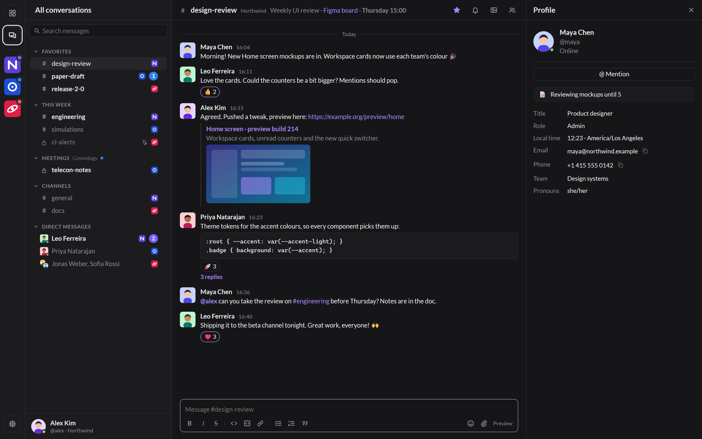

Slack, Mattermost and Rocket.Chat in one fast, light Windows app.
One Home and one search across every workspace you are in, with fine-tunable notifications and your history kept in an encrypted archive on your PC.
Beta · Windows 10 and 11 · free and open source (GPLv3)

Agora is not a wrapper that stacks web apps in tabs. It talks to each service through its API and builds what no official client has: features that work across all your workspaces.
A card per workspace, in its own colour, with what is new and who mentioned you. All conversations puts every workspace in one sidebar.
Every service at once, even offline, from the local archive; ask the servers for older history. from:, in:, phrases and a date filter work everywhere.
Alert, Dot or Silent, set globally, per workspace and per conversation. Mentions and keywords break through; quiet hours hold the rest.
Your own groups can mix a Slack channel, a Mattermost team and a Rocket.Chat room. Favourites sync both ways where the service allows it.
Every message received is kept in a local SQLCipher archive, its key in Windows Credential Manager. Readable and searchable without a connection.
Profiles with title, local time, status and contacts; member lists; click any @mention or #channel to open it.
Markdown toolbar and shortcuts, @mention and :emoji: completion, pasted images with a built-in editor, and a preview of what others will see.
One native shell (Rust and Tauri on WebView2) instead of one Electron app per service: about 100 MB of memory with several workspaces.
Light, dark or system theme, eight accent colours, three text sizes, compact or wide spacing, Lato or Windows fonts.
Sign in the way you always do, single sign-on included. Agora keeps the session in Windows Credential Manager.
Your usual login; every workspace of that session at once.
SSO, GitLab, password with MFA, or a personal token.
Login window with SSO and 2FA, or a personal token.